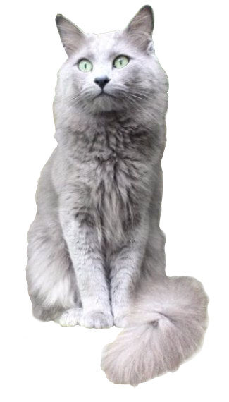

The Nebelung is a rare breed of the domestic cat. Nebelungs have long bodies, wide-set green eyes, long and dense fur, and mild dispositions. The name Nebelung — apparently a portmanteau of the German word (Nebel) for Mist or Fog and a medieval Germanic saga, Nibelungenlied — is perhaps derived from the cat's distinctive silky blue-grey coat and from the breed's progenitors, who were named after the two major figures in the Nibelungenlied, the German warrior Siegfried and the Icelandic queen Brunhilde.
References:
This article uses material from the Wikipedia article ”Siberian cat", which is released under the Creative Commons Attribution-Share-Alike License 3.0.
Picture: "Nebelung" by Desaix83, d'après le travail de Nebelung - https://commons.wikimedia.org/wiki/File:Aleksandr_van_Song_de_Chine.jpg. Licensed under CC BY-SA 3.0 via Wikimedia Commons - https://commons.wikimedia.org/wiki/File:Nebelung.jpg#/media/File:Nebelung.jpg